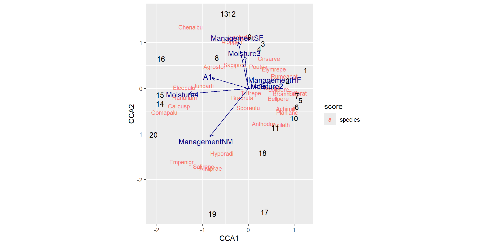
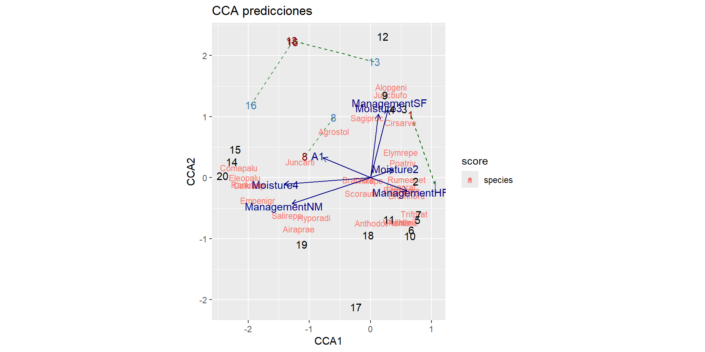
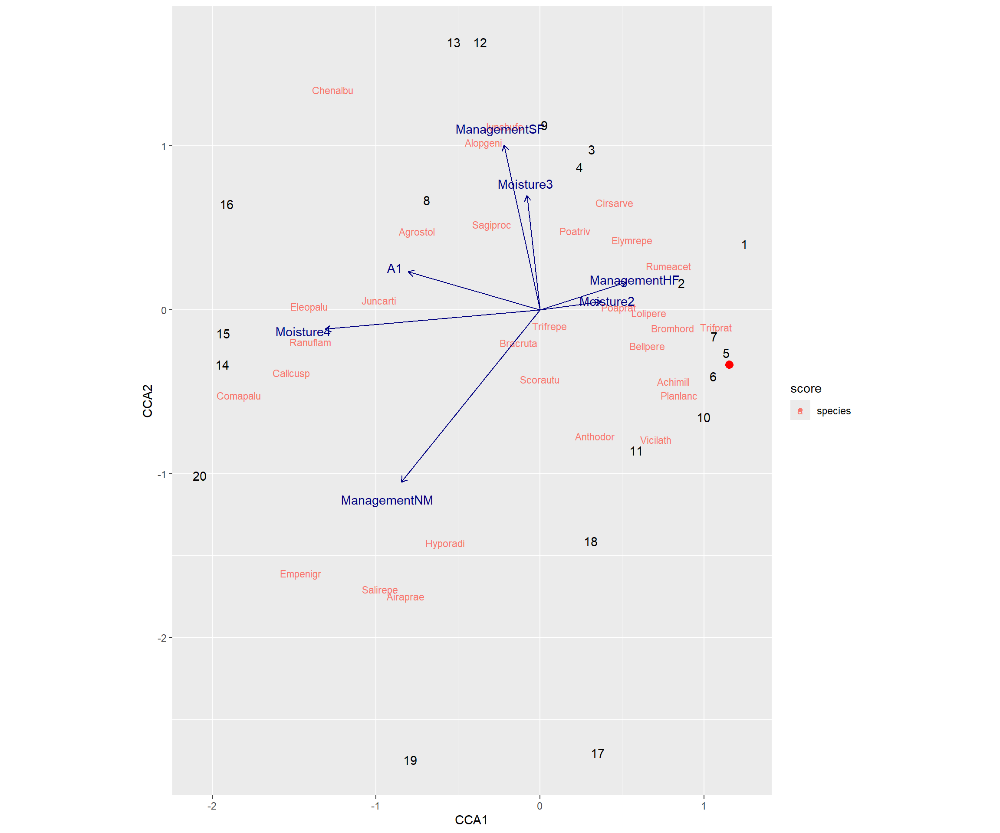

Reforestación arbórea: ¿Entender a una especie o a un ecosistema?
Una comparativa entre la regresión logística y CCA
Autores
- Rodrigo Basaldud
- Brenda Ramirez
- Seani Rodríguez
Junio 2026

Motivación
Supongamos que la Comisión Nacional Forestal (CONAFOR) desea identificar qué especies de arboles tienen mayor probabilidad de establecerse en distintas regiones del país para apoyar diferentes programas de reforestación y restauración ecológica.
Se cuenta con información de cientos de sitios distribuidos en bosques templados del centro de México, donde se registró:
- Altitud.
- Precipitación anual.
- Temperatura media.
- Pendiente del terreno.
- pH del suelo.
Además, para cada sitio se registró la presencia o ausencia de especies como:

Pinus montezumae

Pinus hartwegii

Quercus rugosa

Quercus laurina
Una pregunta inmediata antes de comenzar a plantar podría ser:
Dadas unas condiciones ambientales específicas, ¿Qué especies pueden establecerse con mayor facilidad?
Aparentemente podríamos identificar especies que son típicas de climas o regiones específicas, y con base en ese conocimiento comenzar con el programa de reforestación.
¿Cuál es la dificultad de este problema?
Hay una relación de dependencia entre especies que no se debe ignorar, además en países megadiversos como México, pueden existir distintos ecosistemas en regiones “cercanas”.
Por ejemplo:
Algunas especies tienden a compartir ambientes similares (p.ej. especies de alta montaña).
La presencia de una especie puede influir en la presencia de otra (p.ej. especies que compiten por recursos o que tienen relaciones de facilitación).
Estados como Oaxaca tienen una gran diversidad de ecosistemas, y analizar un ecosistema a la vez puede perder de vista el panoráma completo.
Con lo anterior, el dilema que busca explorar esta presentación:
Si el objetivo es predecir la presencia de especies arbóreas en los bosques mexicanos, ¿es preferible construir un modelo específico para cada especie o un modelo que contemple la biodiversidad de un ecosistema?
Afortunadamente, es una discución que ya se ha hecho…
Esta misma cuestión fue estudiada por Guisan, Weiss y Weiss (1999), quienes compararon un GLM (regresión logística) y CCA para la predicción de distribuciones de plantas.

Hay algunos detalles importantes:
- ¿Por qué comparar un modelo que sí está hecho para predecir contra un modelo que está hecho para entender perfiles y estructuras?
- Si bien, el título suguiere una competencia entre modelos, la verdadera discución es acerca cuándo conviene escoger cada enfoque, y para ilustrarlo se propone un respectivo representante.
- No tiene por qué limitarse a comparar un GLM (regresión logística) contra CCA, sin embargo la regresión logística es un modelo cómodo y el CCA nace naturalmente en el contexto de la ecología.
A continuación, introducciremos ambos enfoques y sus modelos.
Enfoque 1: Especie por especie
Un técnico forestal podría argumentar:
“Pinus hartwegii no responde al ambiente de la misma forma que Quercus rugosa. Cada especie debe estudiarse individualmente.”
Entonces se ajusta un modelo para cada especie:
- Un modelo para Pinus montezumae.
- Otro para Pinus hartwegii.
- Otro para Quercus rugosa.
- Etc.
Un modelo conocido: Regresión Logística
Para una especie particular, por ejemplo Pinus hartwegii, cada sitio puede clasificarse como:
- Presencia (\(Y=1\))
- Ausencia (\(Y=0\))
La pregunta ahora es:
¿Cómo cambia la probabilidad de presencia de la especie cuando cambian las condiciones ambientales?
Por ejemplo:
- ¿La probabilidad aumenta con la altitud?
- ¿Disminuye cuando la temperatura es muy alta?
- ¿Existe una combinación favorable de precipitación y pH?
Supongamos que observamos cientos de sitios y para cada uno conocemos su altitud, temperatura, precipitación, pH, así como si la especie estuvo presente o ausente.
Este modelo busca aprender una relación entre:
\[ \text{Condiciones ambientales} \longrightarrow \mathbb{P}(\text{Presencia de una especie en la región}) \]
La regresión logística modela la probabilidad de presencia de una especie mediante
\[ P(Y=1\mid x_1,\ldots,x_p)= \frac{e^{\eta}} {1+e^{\eta}} \]
donde
\[ \eta= \beta_0+ \beta_1x_1+ \beta_2x_2+ \cdots+ \beta_px_p \]
y las variables \(x_1,\ldots,x_p\) representan las características ambientales del sitio.
La función logística transforma cualquier combinación de variables ambientales en una probabilidad entre 0 y 1.
Esto permite interpretar directamente el resultado del modelo:
- Valores cercanos a 0 indican baja probabilidad de presencia.
- Valores cercanos a 1 indican alta probabilidad de presencia.
- Valores intermedios reflejan incertidumbre.
Efecto de las variables ambientales
Cada coeficiente describe cómo una variable ambiental afecta la probabilidad de presencia de la especie.
Por ejemplo:
- \(\beta_{\text{altitud}}>0\) podría indicar preferencia por zonas altas.
- \(\beta_{\text{temperatura}}<0\) podría indicar preferencia por ambientes fríos.
- \(\beta_{\text{precipitación}}>0\) podría indicar afinidad por sitios húmedos.
Entonces si \(\beta_{altitud} > 0\), un sitio con gran altitud podría recibir una probabilidad alta para la presencia de Pinus hartwegii.

Evaluación predictiva
Una ventaja importante de este enfoque es que como la variable respuesta es binaria (\(Y \in \{0,1\}\)), entonces las probabilidades estimadas pueden transformarse en predicciones de presencia o ausencia mediante un umbral.
Esto permite utilizar métricas de desempeño predictivo como:
- Accuracy.
- Sensibilidad.
- Especificidad.
- Curvas ROC.
- AUC.
Enfoque 2: Ecosistema como un todo
Un ecólogo podría responder:
“Los bosques mexicanos son ecosistemas complejos. Las especies no aparecen de manera aislada, sino que coexisten y hay una relación de entre ellas.”
Desde esta perspectiva, se busca un modelo que logre capturar las relaciones entre las especies y su respuesta conjunta al ambiente.
Esto permite modelar:
- Varios ecosistemas de una misma región.
- Encontrar gradientes ambientales en común para distintas especies.
Análisis de correspondencias ... ¿canónicas?
Antes de dar la definición del modelo, las preguntas que lo motivan son:
- ¿Cómo resumir la información ambiental de cientos de sitios?
- ¿Cómo resumir patrones de coexistencia entre especies?
- ¿Cómo relacionar ambas cosas simultáneamente?
Respondamos cada una.
Variables ambientales
Si tenemos disponible variables ambientales de diversos sitios.
| Sitio | Temp. | Precip. | Humedad | Altitud |
|---|---|---|---|---|
| 1 | 22 | 800 | 35 | 1200 |
| 2 | 18 | 1200 | 60 | 1800 |
| 3 | 15 | 1500 | 80 | 2400 |
- Generalmente las variables suelen estar correlacionadas (a mayor precipitación, también hay mayor humedad).
- Se trabaja con un conjunto de datos de dimensiones altas (muchas variables ambientales).
Análisis de Componentes Principales (PCA)
Supongamos que tenemos registros de la temperatura, humedad y precipitación para diversos sitios. Al visualizar los datos no hay una estructura clara de la variabilidad.
Los datos originales:
Con la información que tengo, ¿Puedo construir nuevas variables que expliquen una mayor proporción de la varianza?
El PCA construye nuevas variables a partir de combinaciones lineales de las variables disponibles, que expliquen la mayor proporción de varianza de los datos.
\[ Z_j = a_{j1}X_1+a_{j2}X_2+\cdots+a_{jp}X_p \]
La estimación de los coeficientes (pesos) se realiza mediante un problema de maximización iterativo:
Sea \[ \mathbf{a}_i= \begin{pmatrix} a_{i1}\\ \vdots\\ a_{ip} \end{pmatrix} \]
Y definamos el i-ésimo componente principal como
\[ z_i=\mathbf{a}_i^{\top}\mathbf{x}. \]
Se busca encontrar \(\mathbf{a}_i\) tal que maximice la varianza de \(z_i\) ,
\[ V(z_i) = V(\mathbf{a}_i^{\top}\mathbf{x}) = \mathbf{a}_i^{\top}\Sigma \mathbf{a}_i, \]
Sujeto a las restricciones
\[ \mathbf{a}_i^{\top}\mathbf{a}_i = 1, \]
\[ \operatorname{Cov}(z_j,z_i) = \operatorname{Cov}(\mathbf{a}_j^{\top}\mathbf{x}, \mathbf{a}_i^{\top}\mathbf{x}) = \mathbf{a}_j^{\top}\Sigma \mathbf{a}_i = 0, \qquad j=1,\ldots,i-1. \]
Es decir, se busca que los componentes principales no están correlacionados entre sí y además son combinaciones lineales que reflejan la máxima variabilidad posible una vez considerando los componentes principales que le preceden.
Pero… El PCA está diseñado para variables continuas.
¿Qué ocurre cuando nuestros datos son abundancias (frecuencias) de especies?
Matriz de especies
Supongamos que ahora tenemos información acerca de la abundancia de especies en distintos sitios y nos interesan los perfiles de cada especie.
| Sitio | Pino | Encino | Oyamel | Cedro |
|---|---|---|---|---|
| 1 | 5 | 1 | 0 | 0 |
| 2 | 3 | 2 | 0 | 1 |
| 3 | 0 | 1 | 8 | 0 |
Análisis de Correspondencias (CA)
El CA busca representar simultáneamente sitios y especies en un espacio de baja dimensión preservando las distancias Ji-cuadrado. Similar al PCA, construye ejes nuevos que expliquen mayor proporción de la inercia (varianza).
Sitios cercanos poseen composiciones similares.
Especies cercanas tienden a aparecer juntas.
Sea \(Y\) la matriz de abundancias de \(n\) sitios y \(p\) especies.
Se trabaja con la matriz de frecuencias relativas
\[ P=\frac{Y}{N}, \]
donde \(N\) es el total de observaciones.
Formulación matemática
Sean
\[ r=P\mathbf{1}, \qquad c=P^\top\mathbf{1}, \]
las masas de filas y columnas.
La matriz de desviaciones respecto a la independencia es
\[ P-rc^\top. \]
Estandarizando por las masas obtenemos
\[ Z= D_r^{-1/2} (P-rc^\top) D_c^{-1/2}. \]
Los ejes principales se obtienen mediante la descomposición en valores singulares
\[ Z=U\Sigma V^\top. \]
Los valores singulares determinan la inercia explicada por cada dimensión.
Los puntajes principales de los sitios son
\[ F=D_r^{-1/2}U\Sigma. \]
Los puntajes principales de las especies son
\[ G=D_c^{-1/2}V\Sigma. \]
La inercia total está dada por
\[ I= \sum_k \lambda_k, \]
donde
\[ \lambda_k=\sigma_k^2. \]
Ejemplo
- Los sitios cercanos tienen composiciones de especies similares.
- Las especies cercanas presentan patrones de ocurrencia semejantes.
- Cada eje representa una fuente importante de variación en la composición biológica.

Pero aún falta algo, el CA describe solo patrones de especies.
No explica por qué aparecen esos patrones.
Necesitamos incorporar información ambiental.
Análisis de Correspondencias Canónicas (CCA)
El CCA busca gradientes ambientales que expliquen las diferencias en la composición de especies entre sitios.
A diferencia del CA clásico, los ejes están restringidos a ser combinaciones lineales de variables ambientales.
\[ u = Xa \]
Es decir, el CCA combina:
- Variables ambientales explicativas.
- Los patrones de especies obtenidos por CA.
Relación entre los métodos
PCA:
\[ \text{Ambiente} \rightarrow \text{Gradientes ambientales} \]
CA:
\[ \text{Especies} \rightarrow \text{Patrones de composición} \]
CCA:
\[ \text{Ambiente y Especies} \rightarrow \text{Patrones de especies explicados por ambiente} \]
Formulación
Supongamos:
- \(Y\): matriz de abundancias de especies.
- \(X\): matriz de variables ambientales.
A partir de la matriz de frecuencias relativas,
\[ P=\frac{Y}{N}, \]
se construye una medida de variación basada en la distancia Ji-cuadrado.
El CCA busca vectores \(a\) que maximicen
\[ \frac{ a^\top X^\top D_r Z D_c^{-1} Z^\top D_r X a }{ a^\top X^\top D_r X a }. \]
Lo anterior conduce al problema de valores propios generalizados:
\[ X^\top D_r Z D_c^{-1} Z^\top D_r X a = \lambda X^\top D_r X a. \]
Los valores propios \(\lambda_j\) representan la cantidad de inercia explicada por cada eje canónico. Similar a la varianza explicada por cada componente en el PCA.
Para construir el Biplot con los ejes canónicos, se obtienen las proyecciones de los sitios
\[ u_k=Xa_k. \]
y las de especies mediante promedios ponderados:
\[ v_k= \frac{1}{\sqrt{\lambda_k}} D_c^{-1} Z^\top D_r u_k. \]
La inercia total se divide en
\[ I_{\text{total}} = I_{\text{restringida}} + I_{\text{residual}}. \]
- Inercia restringida: Explicada por las variables ambientales.
- Inercia residual: No explicada.
Los ejes canónicos representan gradientes ambientales asociados a cambios en la composición de especies. Por ejemplo, el primer eje puede ser asociado al gradiente:
\[ \text{Climas desérticos} ............. \text{Climas tropicales} \]
Y el segundo puede ser asociado a:
\[ \text{Regiones costeras} ............. \text{Regiones de montaña} \]
Entonces
Las especies se ubican según su asociación con cada gradiente.
Regresando al problema
Una comparación de enfoques:
| Método | Ventajas | Desventajas |
|---|---|---|
Regresión logística |
Fácil interpretación de los efectos de cada variable, estimación de probabilidades. | Analiza una especie a la vez y no describe la comunidad completa. |
CCA |
Analiza comunidades completas y relaciona especies con cambios ambientales. | La interpretación de los perfiles es compleja y no estima probabilidades. |
Ejemplo práctico: Dune
Usaremos el dataset Dune.env y Dune de la paquetería vegan, que contiene datos de abundancia de 30 especies en 20 sitios, junto con variables ambientales.

| Variable | Escala | Niveles | Descripción |
|---|---|---|---|
A1 |
Continua | - |
Grosor de la capa de materia orgánica del suelo. |
Moisture |
Ordinal | 1, 2, 4, 5 |
Nivel de humedad del sitio, desde ambientes más secos (1) hasta más húmedos (5). |
Management |
Nominal | BF, HF, NM, SF |
Tipo de manejo del terreno: Biological Farming, Hobby Farming, Nature Management y Standard Farming. |
Use |
Nominal | Hayfield, Haypastu, Pasture |
Uso principal del terreno: producción de heno, heno con pastoreo o pastoreo. |
Manure |
Ordinal | 0, 1, 2, 3, 4 |
Intensidad de fertilización mediante estiércol, de menor (0) a mayor aplicación (4). |
Primero, usamos CCA para analizar a la comunidad completa.

Regresión Logística
Como la regresión logística trabaja con una variable de respuesta binaria, hay que realizar un preprocesamiento a la matriz de especies.
Para fines prácticos, se escogieron solo 6 especies del conjunto Dune, y a cada una se le ajustó una regresión logística mediante selección de variables stepwise backward. Posteriormente para la evaluación del poder predictivo de cada modelo, se realizó una partición en conjuntos train y test con proporción 80%-20%. Para construir al conjunto train se realizó un muestro aleatorio simple sin remplazo.
| especie | formula | sensibilidad | especificidad | correcta_total |
|---|---|---|---|---|
| Achimill | A1 + Moisture + Management | 0.5 | 0.5000 | 0.50 |
| Agrostol | A1 + Moisture + Use | 1.0 | 0.6667 | 0.75 |
| Anthodor | Moisture + Management | 1.0 | 0.6667 | 0.75 |
| Salirepe | A1 + Moisture + Use | 0.0 | 1.0000 | 0.75 |
| Planlanc | A1 + Moisture + Use | 1.0 | 1.0000 | 1.00 |
| Lolipere | A1 + Moisture + Use | 1.0 | 0.0000 | 0.75 |
CCA
En un modelo CCA, se puede proyectar un sitio según la información disponible sobre él: Variables ambientales o abundancia de especies.
Aquí se muestra la proyección de 3 sitios de ambas formas, según las características ambientales (rojo) y según la abundancia de especies (azul).

¿CCA para predicción?
Guisan, Weiss y Weiss (1999) proponen que una vez ajustado el modelo CCA, las variables ambientales de un nuevo sitio pueden proyectarse sobre los ejes canónicos obtenidos durante el entrenamiento.
Posteriormente, la posición del sitio se compara con la de el centroide de cada especie, y si esa distancia rebasa un umbral establecido, se clasifica como ausencia de la especie en el sitio.
Para fines de esta presentación, únicamente nos quedaremos con una visualización del sitio nuevo en los ejes canónicos.
Para un sitio con condiciones ambientales A1 = 3, Management=HF , Moisture=1, Use=Haypastu.
Estimación de presencia via RL
| Especie | Presencia |
|---|---|
| Achimill.1 | 1 |
| Salirepe.1 | 0 |
| Ranuflam.1 | 0 |
Estimación de presencia via CCA

Guisan, Weiss y Weiss (1999) concluyen que la elección de cada enfoque (especie por especie o al ecosistema completo) depende de contextos ecológicos específicos, como interés en una especie endémica o en ecosistemas complejos.
Luego de realizar el análisis presentado, nos parece un enfoque más completo utilizar ambas herramientas de forma complementaria, más que como métodos competitivos.
El CCA permitió comprender la estrcutura general del ecosistema y las relaciones entre sitios y especies considerando los gradientes ambientales; mientras que la Regresión Logística facilitó el análisis detallado de especies de manera individual para la evaluación de su presencia o ausencia.
Por ello, la estrategia que nos pareció más adecuada fue utilizar el CCA para explorar los patrones ecológicos de la comunidad y posteriormente aplicar RL a especies de interés para realizar análisis más específicos y confirmatorios.

Facultad de Ciencias, UNAM